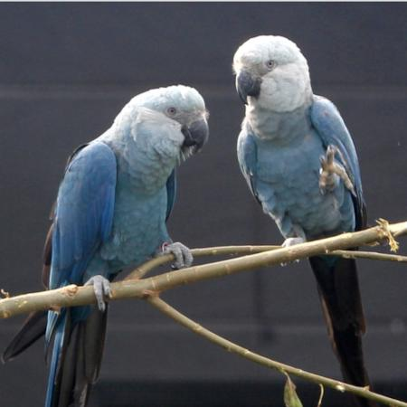

Parrots are a diverse group of birds found all over the world. They are naturally found in tropical areas, with a handful of species found in temperate climates, and the Kea of New Zealand being the only parrot found in alpine climates. Parrots are highly intelligent and adaptible, making them popular exotic pets, which has unfortunately led to an increase in activity in the exotic pet trade. Where introduced, they adapt well, and are known to form stable populations in and around human settlements. Parrots are also considered to be the only animal to display true tripedalism, using their beak and neck as a powerful third limb.
Cockatoos are any of the birds of the family Cacatuidae. They are known for their loud personalities and striking head plumages. They are naturally found in Australia, New Guinea, parts of Indonesia, and much of the Philipines.
Cockatoos are infamously smart, and famously curious for a parrot, meaning that in places like Australia they are considered a "menace" to anything outside. They also take to speaking and mimicing tunes very well. This combination of traits has made them desirable as pets. However, much like all large intelligent birds, thouroughly do your research before you adopt a flying toddler.
Here are some additional facts about these birds.
Cockatoos primarily are black and white in coloration, with a few species being pink. This is because they lack certain textures in their feathers that other parrots have that give them distinctive coloring.
Cockatoos do not produce protective oils like other birds, they instead produce a fine dust that coats their feathers that protects them instead.
The palm cockatoo (Probosciger aterrimus) has been known to fashion tools to drum on trees to attract mates and mark territory. This is a highly advanced behavior for animals.
Lovebirds are a small genus of small old world parrots found naturally in Africa. Lovebirds are highly social animals, and like most other parrots, are monogomous. In fact, the reason for their naming as "lovebird" is because of their pronounced social behavior with their mates in comparison to other parrots.
Of particular note is the peach-faced of rosy-faced lovebird. Naturally found in the Namibian savannah, they are a popular pet because of their sociality and their colorful plumage. However, what makes them noteworthy is the feral population in central Arizona in the Phoenix Metropolitan Area. As the story goes, a monsoon in the 1980s broke an aviary, releasing a fair few peach-faced lovebirds, and then in the 1990s, a breeder decided he did not wnat his birds, and released them into the wild. Today, you can find these birds all throughout the Valley, going about their bird business.
Here are some additional facts about these birds.
Lovebirds are some of the smallest parrots, coming in at 5-7 inches.
It can be considered animal cruelty to seperate a lovebird from its mate, as they are highly social animals that depend on their mates, and without them, their physical health takes a turn.
Despite their name, lovebirds in a colony setting tend to be territorial and aggressive against weaker lovebirds.
Macaw

Spix's/Little Blue Macaw (Cyanopsitta spixii)
When you think of "parrot," you most likely picture a macaw. Macaws are large new world parrots found in South America and Mexico, and formerly in the Carribean. Most macaw species are endangered or extinct. In the wild, especially in the Amazon Basin, macaws consume compounds that are considered toxic. In order to tolerate these, they seak out exposed river clay in what are known as "clay licks."
Here are some additional facts about these birds.
Macaws are the largest parrots in the world, growing up to 3.5 feet long.
Macaw feathers were once prized by native peoples of South America for their bright coloration, and they were used for adornments, and there is even evidence as far north as Utah that they were bred and traded anciently.
The Spix's Macaw (Cyanopsitta spixii) is the subject of the 2011 movie Rio. They are currently believed to be extinct in the wild.